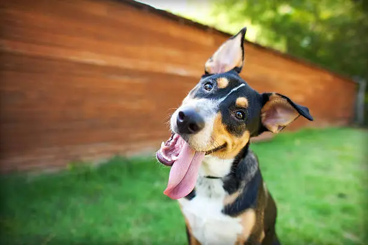

Dogs
Charateristics of a Dogs
- Intelligent, dogs are highly trainable and can learn words, commands, routines, etc
- Loyal, dogs seek companionship, they naturally bond with humans and other dogs
- Playfulness, dogs love to play, play helps with bonding, learning and stress relief
- Affectionate, most dogs are affectionate, dogs show affection through leaning, licking, snuggling, etc
- Trainable, dogs are easily trainable with patience and consistency
This pet would suit you if...
- Active people, dogs need a ton of excercise so owners who love to be active and are really outdoorsy would fit a dog well
- People who want companionship, dogs thrive on social interaction and are ideal for someone who wants an affectionate partner
- Someone with time, dogs need alot of time and attention, whether it be for excerise or training
- Someone who can handle fur, barking, sometimes chewed itemd
- Someone with a stable schedule, dogs appreciate structure
- Someone financially stable, dogs need food, vet visits, grooming, etc
Costs of this pet
- Food, $30-$100 a month, depending on the size dog you own will determine how much food they need a month
- Routine medications, $10-$40 a month, like flea/tick or heartworm prevention
- Grooming, $0 to $90 a month, depending on the hair length of your dog will determine how often your dog needs groomed, short hair dogs you can easily bathe at home while long hair dogs will need to go to a groomer
- Pet insurance, $20-$70 a month depending on the size of your dog
- Supplies, $10-$30 a month includes poop bags, treats, chew toys, etc
Dogs would not be ideal for someone...
- Has a very busy schedule, dogs are needy and need care
- Cant afford ongoing expenses, like vet bills, grooming, emergencies and supplies
- Doesnt have patience for training the dog
- Dislikes mess or fur
- Is allergic to dogs or fur
- Someone who wants an indepedent pet
- Struggles with mobility, dogs need walking and excercise
Fun facts about dogs
- Dogs can smell time, they can detect how scents change throughout the day
- Their noses are like fingerprints, dogs noses are all different and unique, just like human fingerprints
- Dogs can learn up to 1,000 words
- Dogs sense of smell is 100,000 times stronger than human noses
- Dogs dream just like humans
- The worlds smallest dog breed is the chihuahua
- Dogs whiskers can help them see in the dark, whiskers detect tiny changes in air flow, helping dogs navigate through the dark
- Tail wagging can mean a multitude of different things, a wag to the right can mean their happy while to the left can mean stress